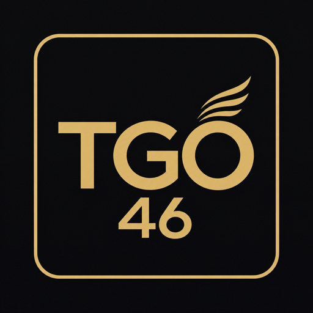

TECHNOLOGY · GROWTH · OPPORTUNITYSCROLL TO DISCOVER
OUR COLLECTIVE
真实分享，彼此成就。
把一个人的经验，变成一群人的力量。
让每一次相聚，都成为向前的起点。
01 / ABOUT US
我们是谁
同侪学习，长期同行。
我们是 TGO 鲲鹏会北京分会第46组，一群在技术、管理与商业实践中持续探索的同行者。
我们以每月分享交换真实经验，在团聚中建立信任，也共同探索 AI 如何改变工作与生活。尊重每个人的经历，认真对待每一次投入。
11当前组员
2025.10.21首次自组织会议记录 · 同行起点
认识我们的同行者
本届组员与分工组长不在时，由大家抽签决定副组长。

BUILT ON TRUST.03 / OUR JOURNEY
成长有迹，相聚有光。
每个月一次分享，
每年至少一次团建或聚餐。
时间、地点、照片与视频，记录共同走过的每一程。内部交流内容不对外公开。
04 / CO-CREATION
不止交流，一起创造。
AI 工具、技能与服务，
让想法走进真实世界。
TGO46 / MEETING TOOLKIT
先从一场更好的会议开始。
会议工具在浏览器本地运行，输入内容不会上传。
组员提交共创项目GREAT MINDS. SHARED FUTURE.